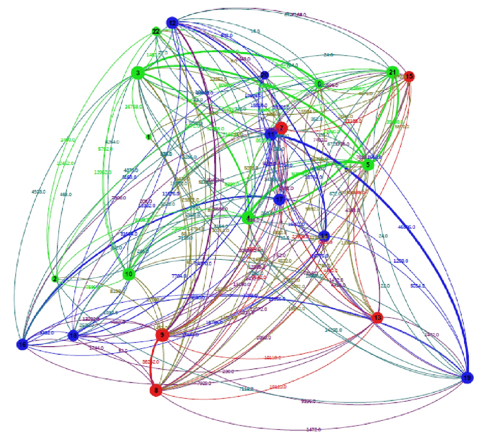
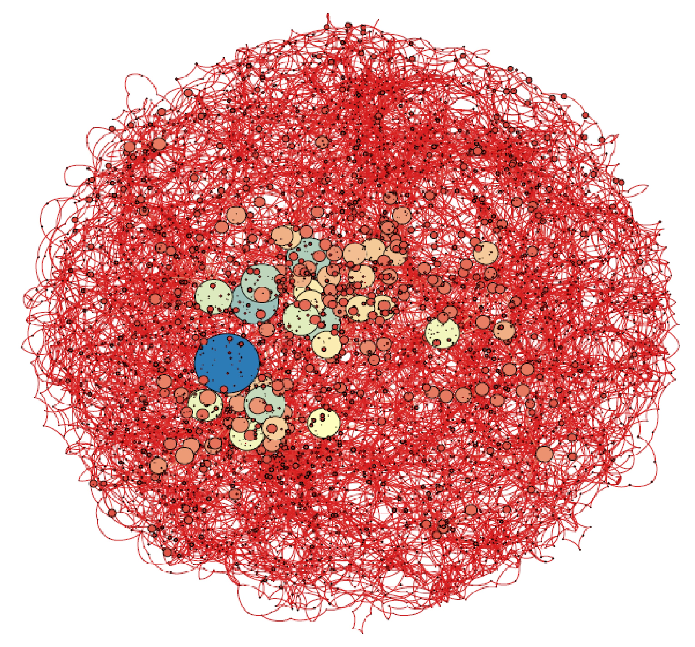

Networks and connections are everywhere. In the data provided by the city of Boston and its partners, we explored some of the networks in the data to identify patterns of mobility and social interactions. Our goal was to create some basic interactive visualizations of these networks by incorporating different data sets, using the foundations of graph theory, to provide new insights.
The connection of ideas is important for a truly innovative city. One of the primary means of idea flow is an effective and resilient transportation network. Our project started with an exploration of the bus system, and the connections created between the towns in the greater Boston area, and within the city's 22 wards. We feel these representations augment the view of webmap to show the strength of the connection between the nodes in the system, rather than simply representing them in a physical space.
 
Once you have a hammer, you go looking for nails... We wanted to provide an example of this method applied, not only to a transportation network, but also to a social network. The data set provided included building permits, including addresses and contractors. We connected contractors by properties that they worked on together to uncover a network of connected contractors that routinely work together.
Finally, we wanted to use some of the data provided by the data partners in this hackathon. The Run Keeper data fits nicely with our methods. We used the LineStrings in the geojson files to build a network of popular Boston neighborhoods to run and bicycle through. The sizes of the nodes is scaled by the population in the neighborhood, and color coded by the number of routes originating from that neighborhood, to show which neighborhoods are most utilizing the app. We incorporate the population data to provide a visual of what neighborhoods are not using the app, which leads to a potential marketing opportunity, or could uncover some structural limitations to exercise in particular parts of the city.